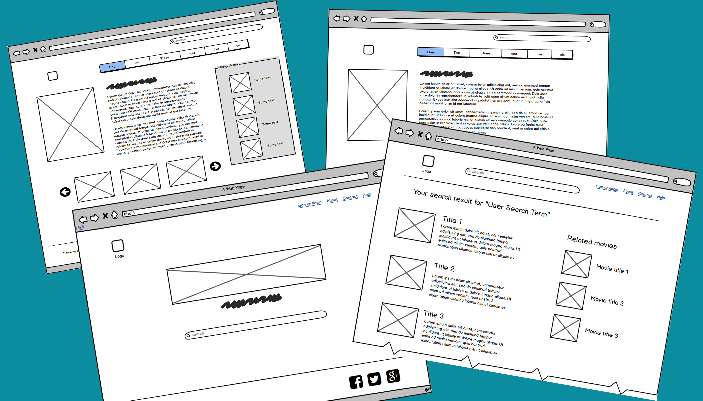
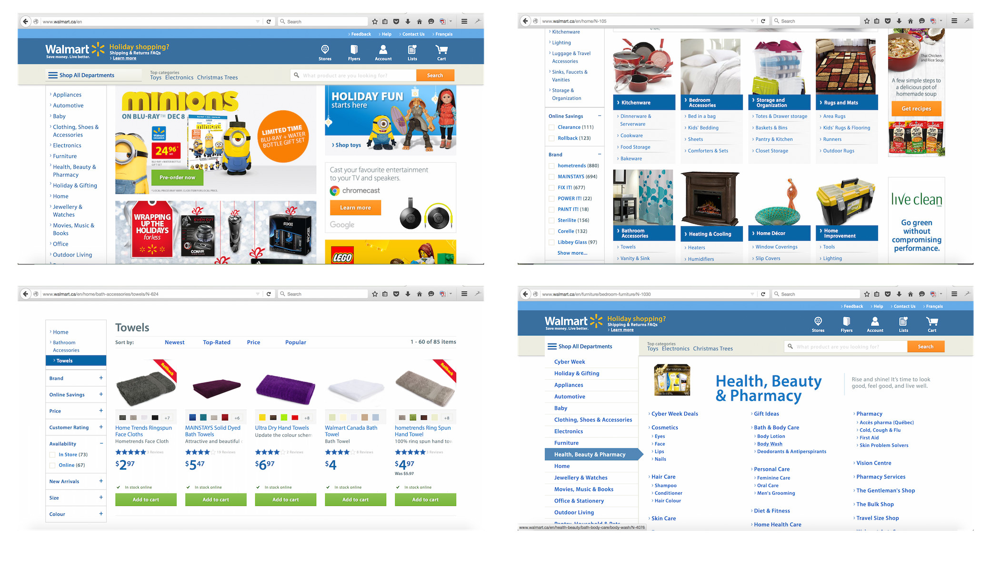
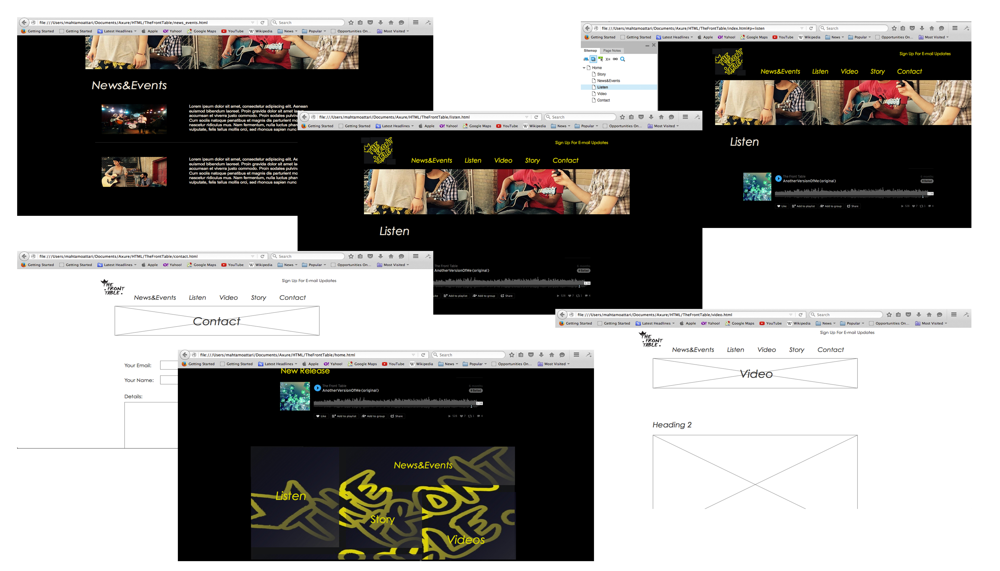

Working on Movision project at Ryerson was a lot of fun. Movision project goal was to offer a semantic based platform to search about movies, TV shows, actors, directors, ... and also provide a semantic based recommendation system
Our challenge was to let the user know that we are using a new technology behind the scene but also offer the familiar design, so user sees what he/she expects to see.
I used Balsamiq to create the wireframe and share my initial ideas for the interface with the rest of the team. After having an agreement and making the adjustment I created prototype to demonstrate the interface.
We researched about new technologies like using semantic search to offer the best to the user.
Web design and development. Interaction design and testing. Research about new technologies.
During my work at razorfish I got exposed to UX design challenges for an ecommerce website. Here at razorfish I am part of the walmart.ca project. Even though I am a developer here, but because of my personal interest and also having the opportunity to attend to the meetings that involves different streams I got familiar with UX design process.
present lots of information in a limited space, keep the balance between what business wants and what users prefer, time management and estimation and introduce new ideas.
Because of my role I gained a valuble experience on HTML, CSS, BootStrap, JavaScript and responsive design.
I also developed soft skills like: working in agile environment, communicating with client and working closely with QA team to test the different aspect of the website.
Develop code and scripts for websites. Assist with coding, testing and debugging. Participate in peer code review process.
As a side project I am working on personal website for my band. I did some research about different factors that matters when one is designing a website for a band (like being artistic and bring entertaining design, but do not take it so far to confuse the user)
My challenge still is to reflect out genre in the design of the website so we can attract the right people who actually love our genre.
I used Axure to create the wireframe. Fortunately Axure also gives me everything that I need to convert those wireframes to prototypes.
After I finished the prototyping for the main pages I ran my ideas with the band and some other friends and got some feedbacks.
Right now I am working toward making some changes based on the feedbacks. Also I am still trying to satisfy myself about the artistic part of the design.
Wireframe gives me the chance to display my initial ideas easy and fast. So then I can discuss them with other people. Also, I will have a start point to use for creating prototype.